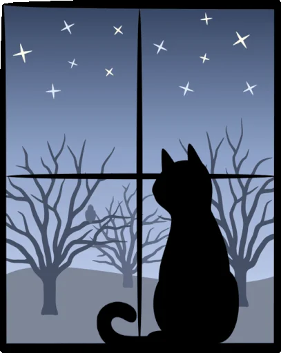

|
¿Qué me dejó Computación Básica II? Este semestre fue todo un reto. Desde el primer parciel note que la dificultad de la materai habia incrementado, por lo que he de admitir que me costo, me fue dificil acostumbrarme al ritmo de la materia pero considero que no lo hice tan mal para lo mucho que se me complico. Lo Bueno y Lo Malo Las buenas experiencias: Definitivamente lo que más me gustó fue la parte de disfrutar con mis compañeros. El ver como todos vamos afrontando los buenos y malos momentos, haber tenido muchos momentos en los que nos moriamos de la risa y otros donde no podiamos mas con nosotros mismos pero el sabe ruq enos teniamos a todos como equipo nos motivaba a seguir. Las malas experiencias: Lo más estresante fue cuando por mas esfuerzo que le poniamos a cada materia, no veiamos los resultados que esperabamos. A veces pasaba horas estudiando para los examenes, y los resultados no eran lo que yo esperba. Al final entendi que nunca es suficiente el esfuerzo y ahora siempre busco dar mas de lo que creo que puedo dar. En conclusión... Fue un semestre pesado pero valió la pena. Siento que ahora tengo una habilidad nueva que me servirá mucho, y me siento muy orgullosa de haber podido pasar la mayoria de mis materias e irme a descansar a mi casa y sin presiones.  |